Suzuki ServiceSuzuki Bike Service & Repair
Suzuki Bike Service & Repair
Starting ₹450
Expert doorstep service for all Suzuki models. Certified mechanics, genuine parts, 30-day warranty.
About
Suzuki Service
Suzuki Doorstep Service
Get professional doorstep service for your Suzuki bike. Ride N Repair's certified mechanics specialise in all Suzuki models — from routine maintenance to complex repairs. We use genuine parts, offer transparent pricing, and back every service with a 30-day warranty. Available across 32+ cities in India.
Models
Suzuki Models We Service (18)
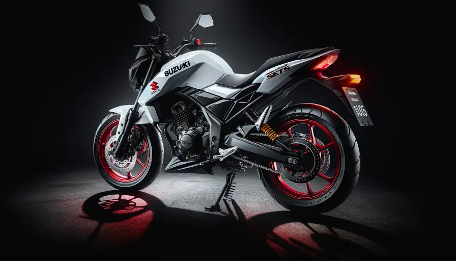
Suzuki LetsView Services →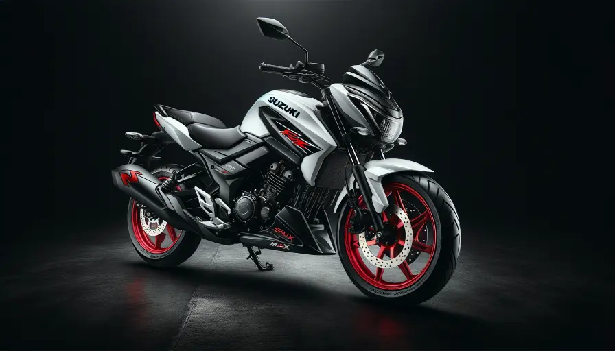
Suzuki MaxView Services →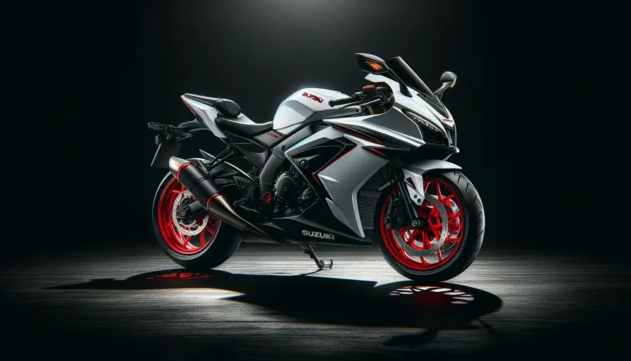
Suzuki HayateView Services →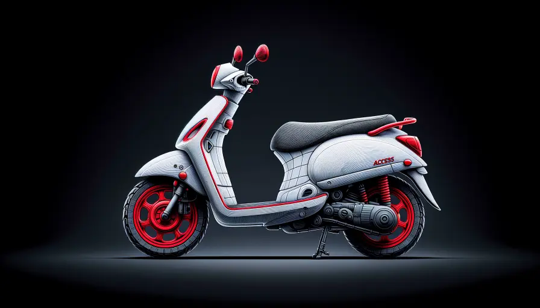
Suzuki AccessView Services →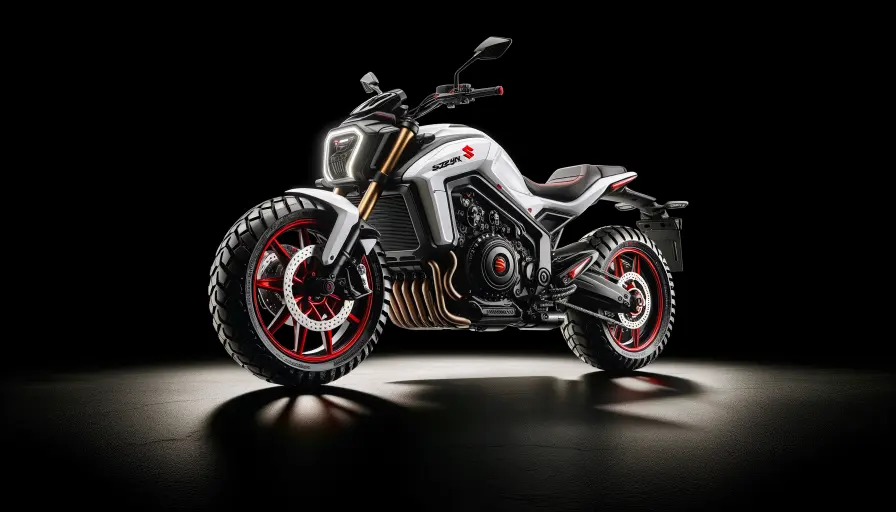
Suzuki AvenisView Services →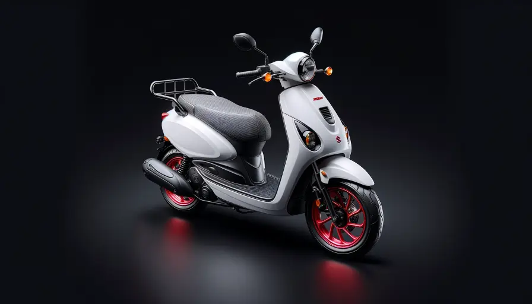
Suzuki BurgmanView Services →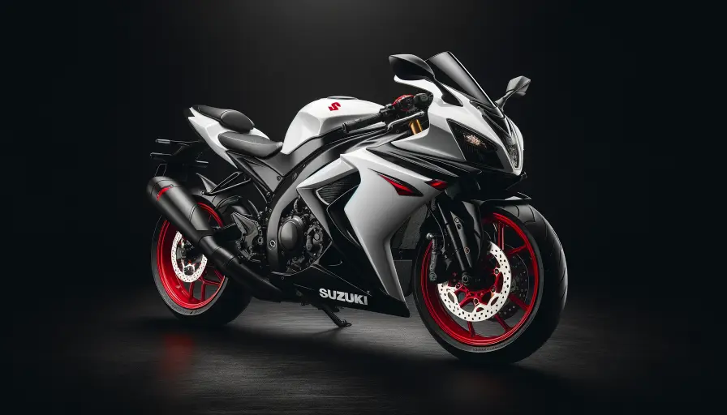
Suzuki HeatView Services →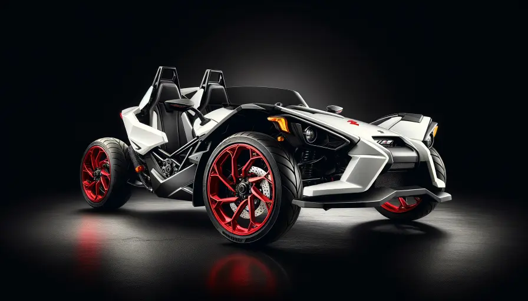
Suzuki SlingshotView Services →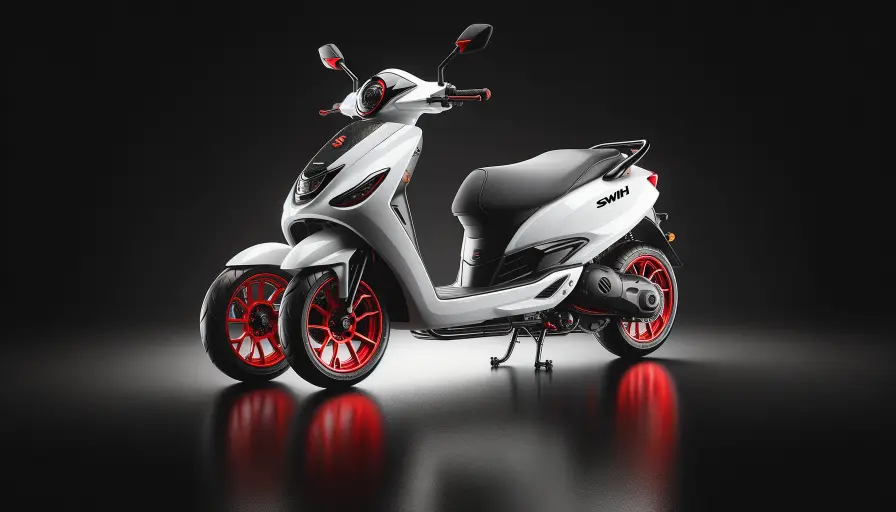
Suzuki SwishView Services →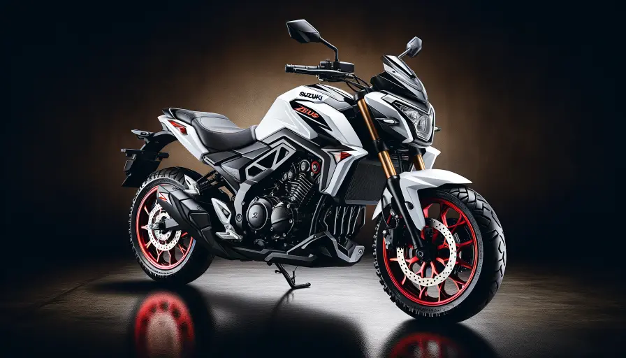
Suzuki ZeusView Services →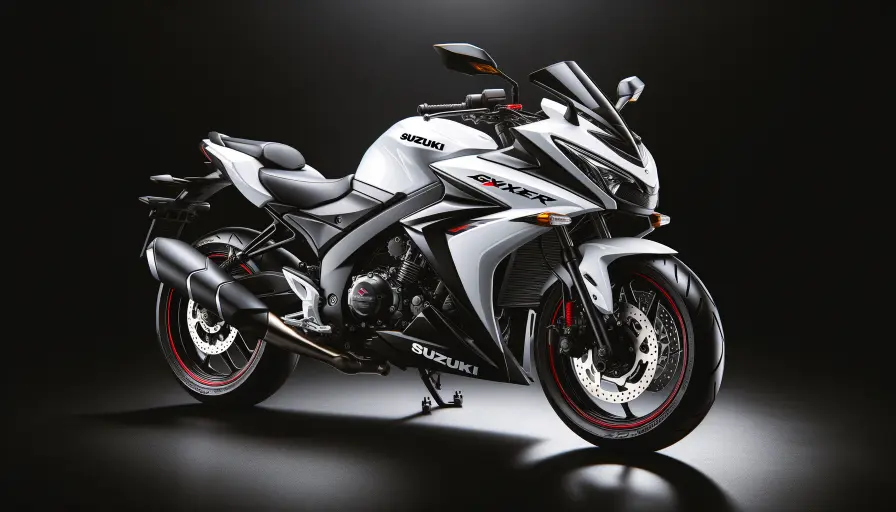
Suzuki GixxerView Services →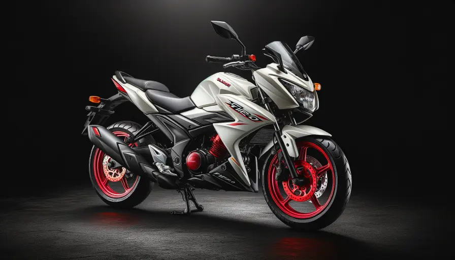
Suzuki FieroView Services →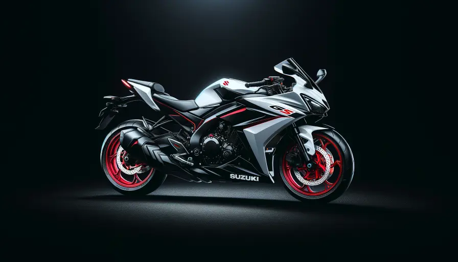
Suzuki GSView Services →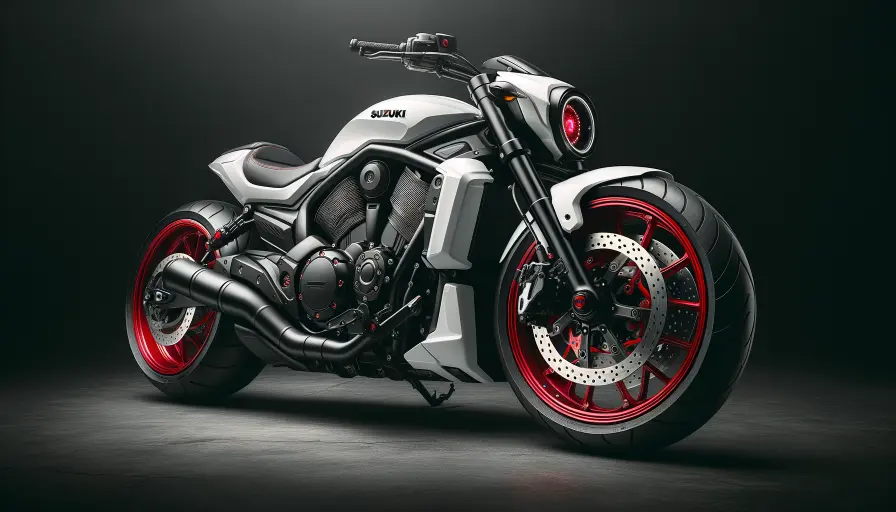
Suzuki IntruderView Services →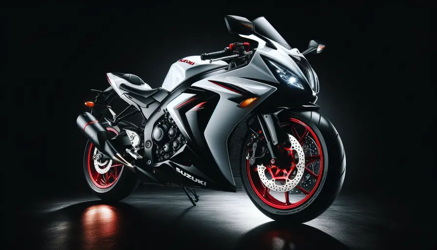
Suzuki InazumaView Services →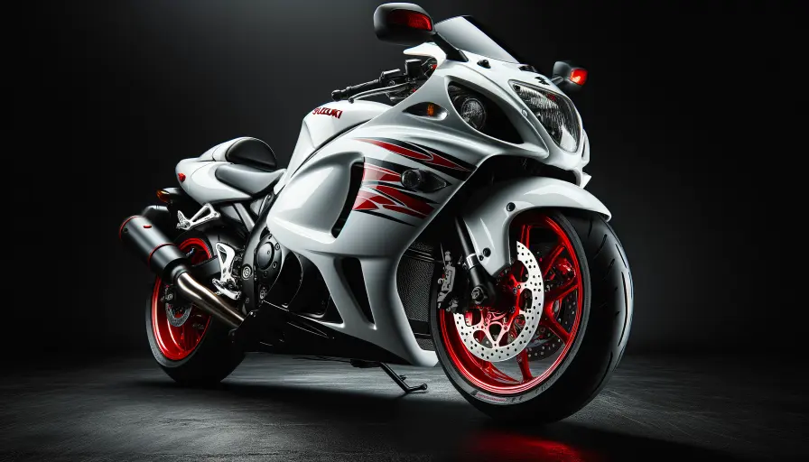
Suzuki HayabusaView Services →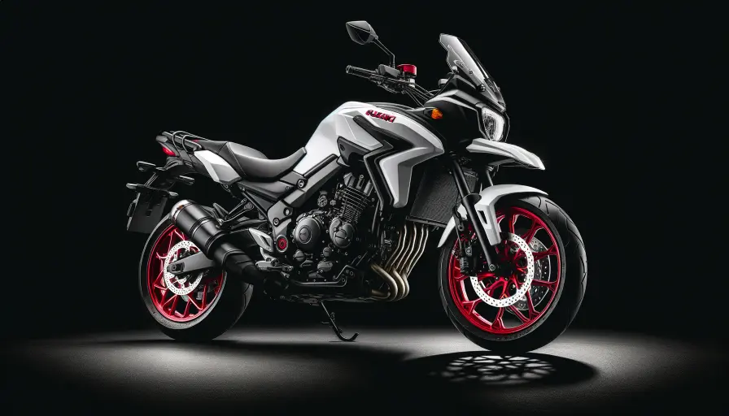
Suzuki V-StromView Services →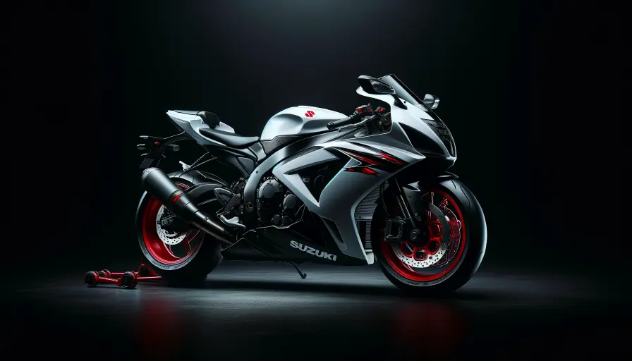
Suzuki GSX-RView Services →Transparent Pricing
Suzuki Service Pricing
Bike General Service
Oil change, filter, tune-up
₹799
- ✓Engine oil change
- ✓Air filter cleaning
- ✓Spark plug check
- ✓Chain lubrication
Bike Repair
Brake, clutch, electrical
₹450
- ✓Brake pad replacement
- ✓Clutch repair
- ✓Electrical fix
- ✓Suspension repair
Bike Puncture
Tubeless, tube, tyre
₹600
- ✓Tubeless puncture repair
- ✓Tube replacement
- ✓Tyre change
- ✓Wheel balancing
Related Services
Suzuki Services
FAQ
Suzuki Service — Common Questions
Need Suzuki Service?
Book Now — Get It Done Today.
Doorstep service · Certified mechanics · ₹450 onwards · 30-day warranty